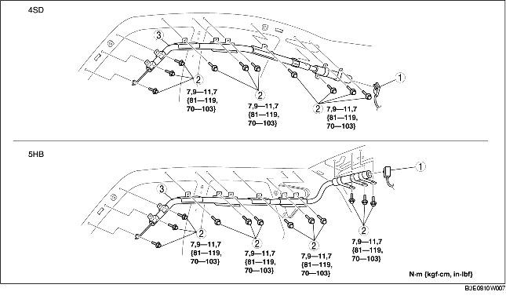

DEPOSE/REPOSE DE MODULE D'AIRBAG DE RIDEAU
B3E081000171W01
-
Avertissement
-
• Une mauvaise manipulation du module d'airbag peut entraîner son déploiement accidentel et provoquer de graves blessures. Lire les avertissements et les précautions pour l'entretien avant de manipuler le module d'airbag. (voir la section AVERTISSEMENTS CONCERNANT L'ENTRETIEN.) (voir la section PRECAUTIONS A PRENDRE POUR L'ENTRETIEN.)
1. Positionner le contacteur d'allumage sur LOCK.
2. Débrancher le câble négatif de la batterie, et attendre pendant 1 minute ou plus.
3. Déposer les pièces suivantes :
-
(1) Console (4SD) (voir la section DEPOSE/REPOSE DE CONSOLE.)
-
(2) Garniture de montant A (voir la section DÉPOSE/REPOSE DE GARNITURE DE MONTANT A.)
-
(3) Bas de portière avant (voir la section DÉPOSE/REPOSE DE BAS DE PORTIÈRE AVANT.)
-
(4) Bas de portière arrière (voir la section DÉPOSE/REPOSE DU BAS DE PORTIÈRE ARRIÈRE.)
-
(5) Garniture inférieure de montant B (voir la section DÉPOSE/REPOSE DE GARNITURE INFÉRIEURE DE MONTANT B.)
-
(6) Ancrage supérieur de ceinture de sécurité avant (voir la section DEPOSE/REPOSE DE CEINTURE DE SECURITE AVANT.)
-
(7) Garniture supérieure de montant B (voir la section DEPOSE/REPOSE DE GARNITURE SUPERIEURE DE MONTANT B.)
-
(8) Siège arrière (voir la section DÉPOSE/REPOSE DE SIÈGE ARRIÈRE.)
-
(9) Garniture de passage de roue (voir la section DÉPOSE/REPOSE DE GARNITURE DE PASSAGE DE ROUE.)
-
(10) Garniture supérieure latérale de coffre (5HB) (voir la section DEPOSE/REPOSE DE GARNITURE LATERALE DE COFFRE.)
-
(11) Garniture de montant C (voir la section DEPOSE/REPOSE DE GARNITURE DE MONTANT C.)
-
(12) Lampe de lecture (voir la section DÉPOSE/REPOSE DE LAMPE DE LECTURE.)
-
(13) Lampe intérieure (voir la section DÉPOSE/REPOSE DE LAMPE INTÉRIEURE.)
-
(14) Pare-soleil (voir la section DÉPOSE/REPOSE DE PARE-SOLEIL.)
-
(15) Poignée de maintien (voir la section DÉPOSE/REPOSE DE POIGNÉE DE MAINTIEN.)
-
(16) Revêtement de toit (voir la section DEPOSE/REPOSE DU REVETEMENT DE TOIT.)
-
(17) Repose-tête (voir la section DEPOSE/REPOSE DE REPOSE-TETE.)
4. Déposer les différents composants selon l'ordre indiqué dans le tableau.

|
1
|
Connecteur
|
|
2
|
Boulon
|
|
3
|
Module d'air bag de rideau
|
5. Pour la repose, suivre l'ordre inverse de la dépose.
6. Lorsque le contacteur d'allumage est positionné sur ON, vérifier que le témoin de système d'airbag s'allume pendant approximativement 6 secondes, puis s'éteint.
-
• Si le témoin de système d'airbag ne fonctionne pas correctement, se reporter au système de diagnostic embarqué (système d'airbag) et effectuer l'inspection du système.